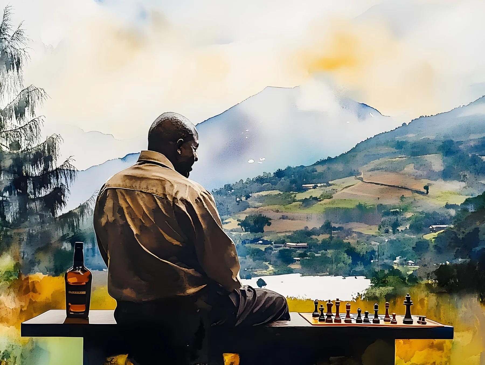

Stories
in line
& light.
A selection from a much larger body of work — detailed drawings, colour studies and works developed through private commissions.
Explore selected works ↗
Selected Works
A selection from a larger archiveThe Artist
Franco Mpagi is a Ugandan visual artist whose practice spans detailed ballpoint-pen drawing, colour studies and personal commissions. People, everyday life, place and memory recur throughout his work.
Faith is an important part of the story. His walk with Christ and involvement in Christian ministry have increasingly shaped the ideas and themes he explores, particularly in his more recent work.
After years of exhibiting and pursuing other creative projects, Franco now takes on artwork primarily through private commissions. The pieces shown here are a small selection from a much larger archive; many began as commissioned works.
Begin a conversation.
Interested in a personal artwork or private commission? Share a little about what you have in mind, and we can begin a conversation.
Email enquiry ↗WhatsApp enquiry ↗Email: Franco.mpagi@gmail.com · WhatsApp: +256 773 192 059
Commissions are discussed individually.